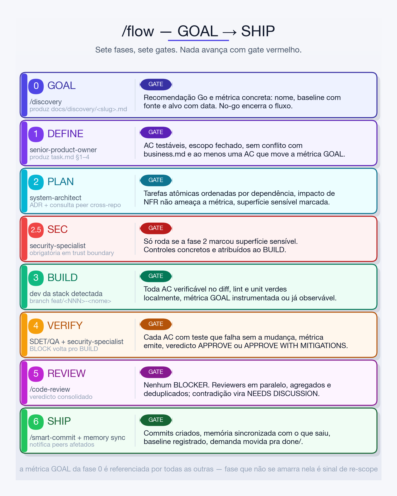
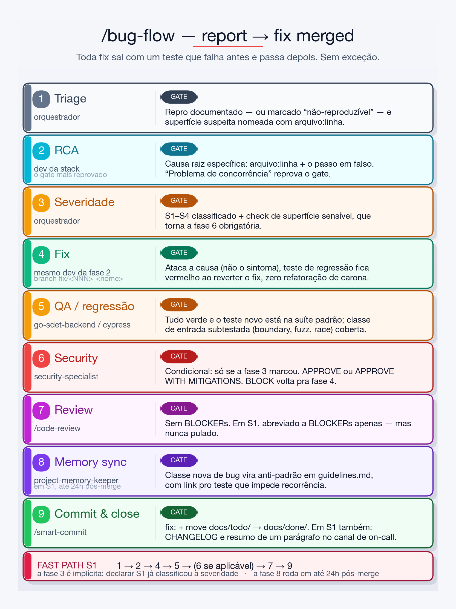
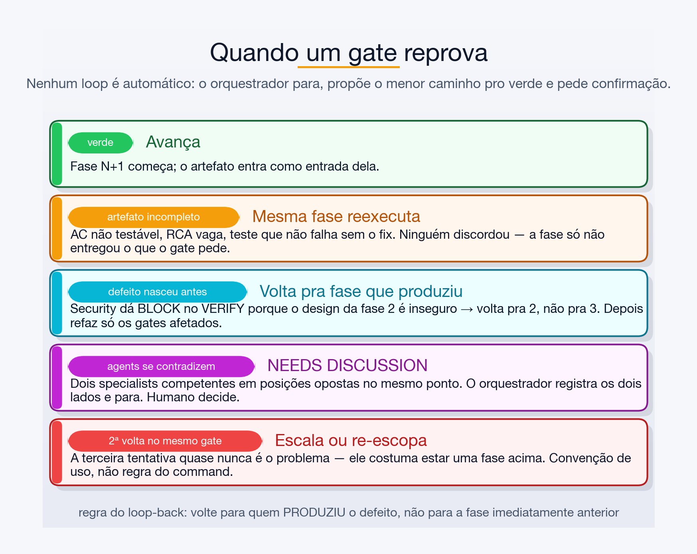
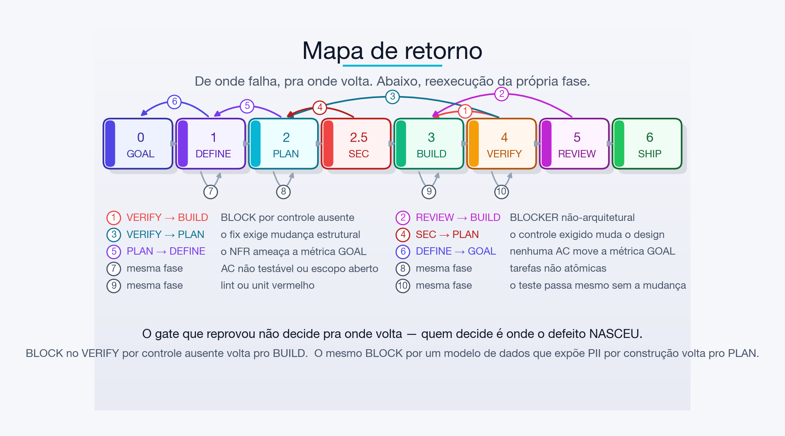
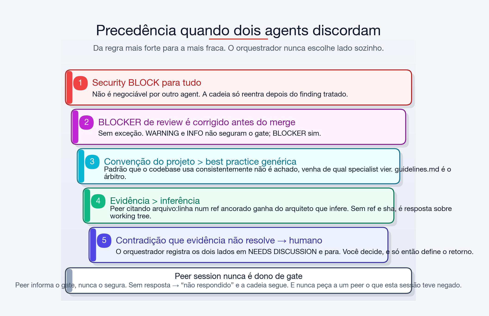

/flow e /bug-flow — como usar, o que cada gate verifica e como a cadeia se comporta quando os agents discordam.commands/flow.md · commands/bug-flow.md · commands/code-review.mddocs/FLOWS.md/flow, /bug-flow, /feature-flow e /incident-response/flow — cadeia e gates os sete gates, um a um, com o critério exato de aprovação/flow demanda real do início ao SHIP, com a consulta peer no meio/bug-flow — cadeia e gates nove fases, fast path S1 e o critério de RCA específica/bug-flow de um bug intermitente ao teste de regressão que o pinou| Situação | Command | Por quê |
|---|---|---|
| Ideia nova, mudança de produto, feature | /flow | Ancora a entrega numa métrica de sucesso antes de qualquer linha de código |
| Comportamento errado num sistema que já existe | /bug-flow | Prioriza RCA específica e teste de regressão |
| Feature, mas a métrica já está definida fora | /feature-flow | Mesma cadeia sem a fase GOAL — superseded, prefira /flow |
| Produção quebrada agora | /incident-response | Mitiga primeiro, investiga depois; cai em /bug-flow para o fix permanente |
A única diferença entre /flow e /feature-flow é a fase 0. Se você não consegue dizer qual número muda com a entrega, o /flow te obriga a descobrir isso antes — e esse é o ponto dele.
Os dois fluxos abrem com o mesmo pre-flight:
.claude/memory/{business,architecture,guidelines}.md. Se faltar, o fluxo para e pede /bootstrap-project.NNN varrendo docs/todo/ e docs/done/; cria docs/todo/<NNN>-<nome>/task.md (flow) ou bug.md (bug-flow)./flow, opcional). ListAgents → uma sessão por repo afetado → handshake. Sem peer aberto, a cadeia roda idêntica./flow — a cadeia GOAL → SHIP/flow reduzir o tempo de primeira resposta do suporte incluindo
histórico de pedidos na tela do atendente
A métrica GOAL estabelecida na fase 0 é o fio que atravessa todas as outras: toda fase seguinte carrega essa métrica no seu briefing, e a fase que não consegue se amarrar nela é sinal de re-scope, não de seguir em frente.
/discoverydocs/discovery/<slug>.md — problem statement, usuários afetados, outcome JTBD e a métrica de sucesso“Reduzir tempo de resposta” não passa. “TTFR mediano do suporte: 8m40s (baseline: dashboard support-ops, jul/2026) → 4m até 30/09” passa.
senior-product-ownertask.md: descrição, segmento, stories INVEST, AC em Gherkin, out of scope e a ligação AC ↔ métrica GOALbusiness.md · ao menos uma AC move a métrica GOALproject-memory-keeper atualiza business.mdA cláusula que mais reprova aqui é a última: um conjunto de AC bem escrito que não move a métrica declarada na fase 0 significa que o escopo derivou.
system-architect (+ integration-architect se integração-pesado, + postgres-dba se DB-pesado)Consulta peer (condicional). Se o design muda um contrato que outro repo consome e há sessão aberta lá, o /flow pergunta o que aquele repo de fato consome hoje — ancorado em origin/main, exigindo que a resposta cite ref e sha. Contradição aqui vale um re-scope antes do BUILD.
security-specialist — só se a fase 2 marcou superfície sensível. Obrigatória quando cruza trust boundarytask.md“Validar entrada” não é controle concreto. “Rejeitar order_id que não pertença ao tenant_id da sessão, com teste em handler_test.go” é.
go-senior-engineer · .NET → dotnet-backend-architect · Node/TS → nodejs-backend-architect · Python → python-engineer · React → senior-react-developer · Postgres-pesado → postgres-dba junto · IaC → aws-devops-engineerfeat/<nome> ou feat/<NNN>-<nome>guidelines.md; instrumenta a métrica GOAL se ela ainda não for observávelgo-sdet-backend (Go) · cypress-qa-analyst (front/E2E) · os dois quando a mudança atravessa · depois, sempre, security-specialistO critério “falha sem a mudança” é literal: um teste que passa tanto com quanto sem o patch não conta como cobertura de AC.
/code-review — dispara em paralelo os specialistas aplicáveis ao diff (máx. 6), agrega e deduplica/smart-commit + fechamentoproject-memory-keeper sincroniza a memória com o que de fato saiu (não com o que foi planejado) · registra o baseline da métrica no momento do ship · notifica peers de repos afetados (só notificação) · move docs/todo/ → docs/done//flow/flow reduzir o tempo de primeira resposta do suporte incluindo
histórico de pedidos na tela do atendenteMemória carregada: business.md, architecture.md, guidelines.md ✅
Entendi: expor os últimos pedidos do cliente na tela do atendente pra cortar
o tempo até a primeira resposta. Confirma? → sim
Demanda alocada: docs/todo/047-historico-pedidos-atendente/task.md
Peers: orders-api-3f (handshake ok — git@github.com:ems/orders-api.git,
main, 9c1a4e2, clean)[047-historico-pedidos-atendente] GOAL — /discovery — PASS
Produced: docs/discovery/historico-pedidos-atendente.md
GOAL metric: TTFR mediano do suporte
8m40s (support-ops dashboard, jul/2026) → 4m até 30/09
Recommendation: Go
Next: DEFINE — senior-product-ownerO PO devolve 3 stories e 6 AC. Uma delas:
Scenario: atendente abre um ticket de cliente com pedidos recentes
Given um cliente com ao menos 1 pedido nos últimos 90 dias
When o atendente abre o ticket
Then os 5 pedidos mais recentes aparecem no painel lateral em até 500ms
# Moves GOAL metric? sim — remove a troca de aba pro admin, que é o maior
# bloco de tempo medido antes da primeira respostaO arquiteto propõe um endpoint novo no orders-api consumido pelo front do suporte. Contrato cross-repo → dispara a consulta peer:
SendMessage → orders-api-3f:
"Vou adicionar GET /v1/customers/{id}/orders?limit=5 no orders-api.
Responda a partir de origin/main — não da sua working tree.
Existe endpoint equivalente hoje? Qual o shape de OrderSummary e quais
campos são obrigatórios? Cite ref, sha curto, arquivo e linha.
Não altere nada."
← resposta (origin/main@9c1a4e2, internal/api/orders.go:88):
"Já existe GET /v1/orders?customer_id=&limit= com o mesmo shape.
OrderSummary tem id, status, total_cents, created_at — todos obrigatórios."[047-…] PLAN — system-architect — PASS
Produced: task.md §5, ADR-0012 (cache do painel lateral)
GOAL metric: TTFR — traceable? yes (NFR de 500ms é a AC #3)
Peer consult: orders-api-3f → endpoint já existe; plano de 5 pra 4 tarefas
Sensitive surface: PII (dados de pedido de cliente) → SEC obrigatória
Next: SEC — security-specialistcustomer_id. Controle obrigatório atribuído ao BUILD: checagem de escopo do atendente + teste.nodejs-backend-architect no front, go-senior-engineer no consumo do orders-api. Instrumenta o timer support.ttfr./code-review devolve 1 WARNING (cache sem TTL explícito) e zero BLOCKER → passa.[047-historico-pedidos-atendente] SHIPPED
branch: feat/047-historico-pedidos-atendente
Phases: GOAL ✅ DEFINE ✅ PLAN ✅ (SEC ✅) BUILD ✅
VERIFY ✅ REVIEW ✅ SHIP ✅
GOAL: TTFR mediano — baseline 8m40s → target 4m até 30/09
(baseline@ship: 8m31s)
Files: 7 created, 11 modified
ADRs: ADR-0012
AC: 6/6 covered
Security: APPROVE
Peers: 1 consulted, 1 repo notified
Follow-ups: medir TTFR em 14/09 e comparar com o baseline@ship
legend: ✅ pass · ➖ skipped (not triggered) · ❌ blockedO baseline@ship é o que torna a métrica auditável depois: sem ele, daqui a três semanas ninguém sabe se os 8m40s de julho ainda eram verdade no dia do merge.
/bug-flow — do report ao fix merged/bug-flow autovacuum não roda em public.events e bloat passou de 40%
— ver thread no Slack #db
Este é o gate mais reprovado do fluxo, e o critério é literal:
| ❌ Não passa | ✅ Passa |
|---|---|
| “problema de concorrência” | internal/cache/cache.go:142 — compare-and-swap não atômico com N≥2 escritores |
| “o autovacuum está mal configurado” | public.events tem autovacuum_vacuum_scale_factor=0.2 herdado do default; com 40M linhas o threshold só dispara a cada 8M tuplas mortas |
Se o bug é instância de um anti-padrão que já está em guidelines.md, isso é uma regressão e precisa ser sinalizada como tal. Se é classe nova, o project-memory-keeper registra depois do fix.
| Sev | Significa | Caminho |
|---|---|---|
| S1 | prod fora, perda de dados, brecha de segurança, dinheiro em risco | hotfix (fast path) |
| S2 | fluxo core quebrado para muitos usuários, sem workaround confiável | normal, prioridade alta |
| S3 | fluxo não-core degradado, com workaround | normal |
| S4 | cosmético / edge case / sem impacto visível | normal |
Bug em ou perto de auth, authz, secrets, PII, pagamentos, manipulação de arquivo, desserialização, SQL cru ou isolamento multi-tenant torna a fase 6 obrigatória.
Verde quando a causa raiz foi atacada (não o sintoma), existe teste de regressão que falha antes do fix e passa depois, e nenhuma refatoração de carona entrou no diff. O teste é verificado revertendo o fix e confirmando que ele fica vermelho.
1 → 2 → 4 → 5 → (6 se aplicável) → 7 → 9. A fase 3 é implícita — declarar S1 já classificou a severidade. A fase 7 continua obrigatória, mas abreviada a BLOCKERs. A fase 8 não bloqueia o fix e também não é pulada: roda em até 24h pós-merge./bug-flow/bug-flow o contador de itens no carrinho às vezes fica menor que o número
real depois de dois adds rápidos — intermitente em staging,
sem stack trace[052-carrinho-contador-perdido] Phase 1 — orchestrator — PASS
Repro: 2 POST /cart/items concorrentes no mesmo cart_id → contador
incrementa 1x (10 execuções, falha em 6). Documentado em bug.md §2.
Suspeita: internal/cart/counter.go (read-modify-write sem lock)
Next: Phase 2 — go-senior-engineerDefect: internal/cart/counter.go:74 — `c.count = c.count + n` sob RWMutex
tomado em RLock (leitura) e não em Lock (escrita). Dois writers
concorrentes leem o mesmo valor e escrevem o mesmo resultado;
um incremento é perdido.
Por que não foi pego: TestCounterAdd é sequencial; não há teste com -race.
Hipóteses descartadas: retry do cliente (logs mostram 2 requests distintos,
IDs diferentes); cache stale (o valor errado persiste no banco).Específico, com evidência e arquivo:linha → gate verde.
S2: fluxo core, sem workaround, o cliente perde item silenciosamente. Superfície sensível: nenhuma → a fase 6 não roda.
func TestCounterAdd_Concurrent(t *testing.T) { // falha com -race antes do fix
c := NewCounter()
var wg sync.WaitGroup
for i := 0; i < 100; i++ {
wg.Add(1)
go func() { defer wg.Done(); c.Add(1) }()
}
wg.Wait()
if got := c.Value(); got != 100 { t.Fatalf("got %d, want 100", got) }
}O fix é trocar RLock por Lock no caminho de escrita: 1 arquivo, 2 linhas. Revertido o fix, o teste fica vermelho — gate verde.
O go-sdet-backend nota que a RCA aponta uma classe: todos os writers do pacote cart. Encontra o mesmo padrão em internal/cart/reservations.go:51 e adiciona teste + fix. A suíte passa a rodar com -race no CI.
[052-carrinho-contador-perdido] DONE
branch: fix/052-carrinho-contador-perdido — severity: S2
RCA: RLock usado em caminho de escrita em counter.go:74;
incremento perdido sob concorrência
Files: 4 changed
Tests: regressão em counter_test.go + reservations_test.go;
CI agora roda -race
Security: n/a
Memory: guidelines.md (anti-padrão RWMutex)
Follow-ups: varrer os outros pacotes pelo mesmo padrão (task 053)arquivo:linha e o passo em falso — é isso que libera o gate 2, não a hipótese plausível.Um gate reprovado não é um erro do fluxo — é o fluxo funcionando. O que importa é para onde a cadeia volta, quem decide e como ela não gira em círculo.

/code-review, que roda reviewers em paralelo. Mesmo file:line e mesmo problema → deduplica e mantém a severidade mais estrita. Recomendações genuinamente opostas → o command não escolhe lado: o achado vai para Conflitos entre reviewers e o veredicto vira NEEDS DISCUSSION.Reexecutar uma fase reexecuta os gates a jusante que foram afetados. Consertar um teste no VERIFY não obriga a refazer o PLAN; mudar o contrato no PLAN obriga a refazer tudo depois dele. E o loop nunca é automático: em BLOCK ou No-go o orquestrador para, mostra o achado, propõe o menor caminho pro verde e pede sua confirmação antes de tentar de novo.

/bug-flow| Gate | Achado | Volta pra |
|---|---|---|
| 1 Triage | não reproduz e não há dados | 1 — marca “não-reproduzível” e pede dados ao reporter |
| 2 RCA | causa vaga, ou causa que é sintoma de outra mais funda | 2 |
| 4 Fix | trata sintoma; teste não vira vermelho ao reverter; refactor de carona | 4 |
| 5 QA | colateral quebrado | 4 |
| 5 QA | RCA aponta classe subtestada | 4 — amplia o fix |
| 6 Security | BLOCK | 4 (explícito no command) |
| 7 Review | BLOCKER | 4 |
| 7 Review | NEEDS DISCUSSION | humano decide antes de qualquer volta |

task.md / bug.md, com fase, achado e o que mudou na tentativa. Sem isso ninguém enxerga que já foram três voltas.| ❌ | Por quê |
|---|---|
| Pular fase “pra ganhar tempo” | Os gates são o valor. Cadeia sem gate é só delegação em série |
Rodar /flow sem métrica com baseline | A fase 0 para de propósito. Sem métrica você não está pronto pra especificar |
| O orquestrador escrever código | Ele delega, avalia gate e sintetiza. Código é do dev da stack |
| Pedir a um peer o que esta sessão teve negado | Contorna uma decisão que você tomou. Trabalho bloqueado volta pro usuário |
| Perguntar pra três sessões do mesmo repo | Não são três fontes — é um repo visto de três checkouts. Uma por repo, ancorada em ref |
| Deixar um gate esperando peer | Peer informa gate, nunca é dono dele. Sem resposta → “não respondido” e segue |
Refatoração de carona no /bug-flow | Bug fix é uma mudança só. Limpeza vai pro /flow ou task própria |
| Aceitar RCA vaga | “Problema de concorrência” não é causa raiz; é a descrição do sintoma |
| Escolher lado num NEEDS DISCUSSION | O conflito existe porque dois specialists competentes discordaram. É decisão humana |
/flow <ideia>
GOAL → DEFINE → PLAN → (SEC) → BUILD → VERIFY → REVIEW → SHIP
/bug-flow <sintoma + evidência>
Triage → RCA → Sev → Fix → QA → (Sec) → Review → Memory → Commit
Artefatos
docs/discovery/<slug>.md brief da fase GOAL
docs/todo/<NNN>-<nome>/task.md demanda de feature, seções 0–10
docs/todo/<NNN>-<nome>/bug.md demanda de bug, seções 1–6
docs/done/<NNN>-<nome>/ pra onde vai no SHIP / fase 9
docs/adr/ADR-NNNN-*.md decisões estruturais da fase PLAN
.claude/memory/{business,architecture,guidelines}.md
Vocabulário de gate
Go / No-go / Learn-more fase GOAL
APPROVE / APPROVE WITH MITIGATIONS security-specialist — verde
BLOCK security-specialist — para a cadeia
APPROVED / …WITH COMMENTS /code-review — verde
CHANGES REQUESTED /code-review — tem BLOCKER
NEEDS DISCUSSION /code-review — reviewers se
contradisseram → humano decide
Regra do loop-back
Volte pra fase que PRODUZIU o defeito, não pra anterior imediata.
Nenhum loop é automático — o orquestrador propõe e você confirma.
Duas voltas no mesmo gate → pare e escale (convenção).commands/flow.md e commands/bug-flow.md.
Versão em texto: docs/FLOWS.md. Diagramas: docs/flows/render_print.py.